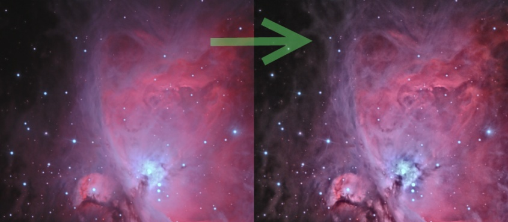

Implements local equalization of the histogram. Can be used to enhance local contrast and visibility of structures in the image. [more]
Categories: IntensityTransformations
Keywords: histogram equalization, local contrast
[hide]
[hide]
This process implements local histogram equalization with configurable limitation of maximum contrast enhancement. It is based on the CLAHE method (Contrast-Limited Adaptive Histogram Equalization). The main purpose of the process is to enhance local contrast and visibility of structures in low-contrast regions of the image. The process is designed to run on non-linear (already stretched) images.
Histogram equalization takes the histogram and computes a transfer curve, which grants more brightness range to higher histogram peaks and less brightness range to histogram valleys. In other words, large areas of similar brightness get more contrast. Local histogram equalization works on individual pixels and computes a transfer curve from the histogram of a pixel neighborhood.
The classical histogram equalization algorithm has the drawback of giving most contrast range to high narrow peaks, like a uniform noisy background. This problem is solved with the contrast limit property of the CLAHE method. This parameter limits the maximum slope of the transfer curve and prevents narrow peaks from getting too much contrast, effectively reducing noise promotion.
[hide]
Radius of the area around the pixel used to evaluate the histogram. Lower values strenghten the effect but are sensitive to noise and suffer from ringing around bright features like stars. Higher values weaken the effect but are more stable and do not exhibit ringing. For most images, values from 32 to 128 are suitable.
The resolution of the histogram used to evaluate the equalization transfer curve. Higher values makes computation more precise but slower. Besides, they can work poorly with low values of the kernel radius parameter. For most images, use 8-bit resolution. In case you're using high kernel radii and you encounter posterized results, try higher resolutions.
[hide]
Usually, this process is used in the final stages of your image processing, when the image is already stretched. In case there are regions with low-contrast structures (like nebulae or galaxies), you can use this process to increase contrast in these areas.
Test the process on previews. In order to provide a good preview of the final result, the preview size should be larger than the kernel diameter (twice the kernel radius parameter). You may want to protect the stars or the background with a mask. The process works best on regions with moderate brightness.
Experiment with two basic parameters: kernel radius and Contrast Limit. In general, decreasing radius or increasing limit makes the effect stronger but also more noisy. When you are satisfied, you can fine-tune the amount of the delivered change by using the Amount parameter.
It is recommended to keep the last two parameters (histogram resolution and circular kernel) with their default values unless you have good reasons to change them.
Copyright © 2011, Zbynek Vrastil